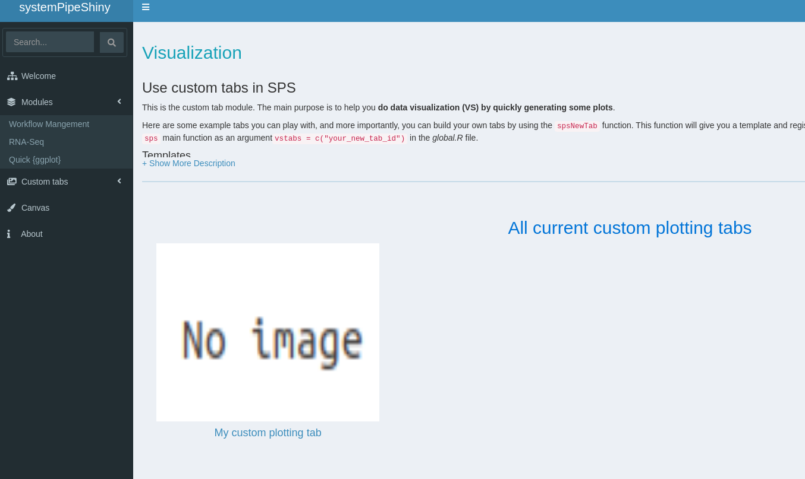

Manage tabs
SPS tabs
In SPS, tab is the basic component of a functionality unit. For example, all the Modules in SPS are complex tabs with many small sub-tabs, the Canvas is another independent tab providing image editing features and an user custom tab is also a SPS tab.
From the developer’s view, all SPS tabs are Shiny Modules.
To understand how SPS tabs work, we will demonstrate with a SPS project. For demo purpose, we are using the
/tmp folder but one should use a regular location instead of the temp in a real
case.
suppressPackageStartupMessages(library(systemPipeShiny))
spsInit(app_path = tempdir(), project_name = "tab_demo", overwrite = TRUE, change_wd = FALSE)
## [SPS-INFO] 2021-02-12 17:56:22 Start to create a new SPS project
## [SPS-INFO] 2021-02-12 17:56:22 Create project under /tmp/RtmpVUdu2M/tab_demo
## [SPS-INFO] 2021-02-12 17:56:22 Now copy files
## [SPS-INFO] 2021-02-12 17:56:22 Create SPS database
## [SPS-INFO] 2021-02-12 17:56:22 Created SPS database method container
## [SPS-INFO] 2021-02-12 17:56:22 Creating SPS db...
## [SPS-DANGER] 2021-02-12 17:56:22 Db created at '/tmp/RtmpVUdu2M/tab_demo/config/sps.db'. DO NOT share this file with others
## [SPS-INFO] 2021-02-12 17:56:22 Key md5 be5e352c4d777b1ab3530be8362dd5cb
## [SPS-INFO] 2021-02-12 17:56:22 SPS project setup done!
## save project path
(sps_dir <- file.path(tempdir(), "tab_demo"))
## [1] "/tmp/RtmpVUdu2M/tab_demo"
To reproduce code locally, run the following chunk instead.
library(systemPipeShiny)
spsInit()
sps_dir <- normalizePath(".")
Tab registration
In SPS, all tabs are controlled by the config/tabs.csv file. To see what kind of
tabs you have with current project. use the spsTabInfo function. It returns a tibble
of current tab information.
spsTabInfo(app_path = sps_dir)
## # A tibble: 11 x 8
## tab_id display_label type type_sub image displayed tab_file_name plugin
## <chr> <chr> <chr> <chr> <chr> <chr> <chr> <chr>
## 1 core_ab… About this App core "" "" 1 No file for … "core"
## 2 core_ca… Plot Canvas core "" "" 1 No file for … "core"
## 3 core_da… Home core "" "" 1 No file for … "core"
## 4 core_ri… Right side menu core "" "" 1 No file for … "core"
## 5 core_top Top push bars core "" "" 1 No file for … "core"
## 6 module_… Module Main Page vs "" "" 1 No file for … "core"
## 7 wf Workflow module wf "" "" 1 No file for … "core"
## 8 vs_rnas… RNAseq module vs "" "" 1 No file for … "core"
## 9 vs_esq Quick ggplot mo… vs "" "" 1 No file for … "core"
## 10 vs_main custom tabs mai… vs "" "" 1 No file for … "core"
## 11 vs_exam… My custom plott… vs "plot" "" 1 tab_vs_examp… ""
- tab_id: A unique string ID
- display_label: for type is “core” or “module”, this is only some description, but for you own custom tabs, this value will be used as a display tab name on left sidebar on SPS UI.
- type: tab category, “core”, “module” and “vs” (visualization).
- type_sub: more specific category, current only “plot” (plotting)
- image: If this is an user custom tab, providing an image path will display the image in visualization main tab gallery. If it not provided, a warning will be given on app starts and an “No image” image will be used like the following:

- displayed: Internal use only
- tab_file_name: where the tab file is relative to the
Rfolder. - plugin: Internal use only
Add a new custom tab
SPS provides a template to help developers to create a small SPS tab that
- The main purpose is to generate some plots
- can be loaded into SPS framework easily
- can interact with other SPS tabs (components), like the Canvas tab.
Simple template
Under current SPS version, users are able to add custom tabs with the spsNewTab function.
This function:
- creates the tab file.
- provides a nice template.
- Helps you to register tab information to
tabs.csv
spsNewTab(tab_id = "vs_new", tab_displayname = "New tab demo", app_path = sps_dir)
## [SPS-INFO] 2021-02-12 17:56:23 Write to file /tmp/RtmpVUdu2M/tab_demo/R/tab_vs_new.R
## [SPS-INFO] 2021-02-12 17:56:23 Now register your new tab to config/tab.csv
## [SPS-SUCCESS] 2021-02-12 17:56:23 New tab created!
## [SPS] 2021-02-12 17:56:23 To load this new tab: `sps(tabs = c("vs_new")`
If you are running the code locally, and are using Rstudio, the tab file will be opened automatically for you.
By default, it uses the simple template, which contains the spsEzUI and spsEzServer functions.
We have provided commented instructions on how to fill each argument.
UI
spsEzUI(
desc = "xxx",
tab_title = "xxx",
plot_title = "xxx",
plot_control = shiny::tagList(
xxx
)
)
The only augment new users need to take some time to learn is adding plot_control.
Developers need to add some Shiny UI components to let users control how the plotting is
done with interactive options. Basic use can be learned in 5 minutes on
Shiny website and Shiny book
Server
spsEzServer(
plot_code = {
# data passed from data loading is a reactiveValues object, data stored in `mydata$data`
plot_data <- mydata$data
# some validations, make sure users give you the right data format
spsValidate({
stopifnot(inherits(plot_data, "data.frame")) # require a dataframe
stopifnot(nrow(plot_data) > 1) # has least one row
if (!all(c("Sepal.Length", "Sepal.Width") %in% colnames(plot_data)))# has two required columns
stop("Require column 'Sepal.Length' and 'Sepal.Width'")
TRUE # give it a TRUE if all checks passed.
},
verbose = FALSE # only show messages when fail
)
# actual plot code
ggplot2::ggplot(plot_data) +
ggplot2::geom_point(ggplot2::aes(x = Sepal.Length, y = Sepal.Width)) +
# grab user defined title from plot control by `input$+control_ID`,
# no need to add `ns()` on server end.
ggplot2::ggtitle(input$plot_title)
},
other_server_code = {}
)
For the server code, users only need to focus on the plotting code. The only very important thing
developers need to remember is that the plotting data been passed to this function
is stored in a reactiveValues
object and it is called mydata$data. Usually we assign it to a new value so it can
be used easily downstream, like plot_data <- mydata$data.
Some validation is recommended before reaching the plotting code. You would never know what
kind of dataset users upload. It is always good to check if users' uploads meet the
requirements. In SPS you can use the spsValidate function or use Shiny’s default validate
function (spsValidate is discussed in tools section).
Full template
For some developers who already has experience with Shiny, and would like to make more
complex customization, using the full template enables you to change every detail on
the new tab. Simply add the template = "full" argument.
spsNewTab(
tab_id = "vs_new_full",
tab_displayname = "New tab demo",
template = "full",
app_path = sps_dir)
## [SPS-INFO] 2021-02-12 17:56:23 Write to file /tmp/RtmpVUdu2M/tab_demo/R/tab_vs_new_full.R
## [SPS-INFO] 2021-02-12 17:56:23 Now register your new tab to config/tab.csv
## [SPS-SUCCESS] 2021-02-12 17:56:23 New tab created!
## [SPS] 2021-02-12 17:56:23 To load this new tab: `sps(tabs = c("vs_new_full")`
You can see the full template is a lot longer than the simple template:
simple_len <- R.utils::countLines(file.path(sps_dir, "R", "tab_vs_new.R"))
full_len <- R.utils::countLines(file.path(sps_dir, "R", "tab_vs_new_full.R"))
spsinfo(glue::glue("Simple template has {simple_len} lines"), TRUE)
## [SPS-INFO] 2021-02-12 17:56:24 Simple template has 66 lines
spsinfo(glue::glue("Full template has {full_len} lines"), TRUE)
## [SPS-INFO] 2021-02-12 17:56:24 Full template has 281 lines
In your global.R, scroll down to the bottom, you should see:
sps_app <- sps(
tabs = c("data_example", "plot_example1", "plot_example2"),
server_expr = {
msg("Custom expression runs -- Hello World", "GREETING", "green")
}
)
This is the SPS main function. You can load/unload tabs by providing tab IDs in vstabs argument, like
c("tab1", "tab2). Open config/tabs.csv or use spsTabInfo() to see what tabs IDs can be load and other
tab information. Currently you can only load/unload visualization tabs, the key word vs under column “type";
essential framework tabs(core) and workflow tabs (wf) are loaded automatically and these tabs cannot be modified.